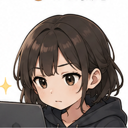

今日の記録
⚙️
体調
🙂
好調
疲れ
🙂
あまりない
痛み
😁
なし
今日の測定
体重
—
BMI
—
体脂肪率
—
筋肉量
—
腹囲
—
今日のおすすめ
状態を記録すると提案します
体調・疲れ・痛み・運動量から自動調整。
今日の記録を入力
今日の状態
体調
疲れ
痛み
測定
🌅 朝
🌙 夜
測定なし
記録日
夜は0:00〜5:59は前日の夜として自動表示。日付は自由に変更できます。
体重（kg）
体脂肪率（%）
筋肉量（kg）
推定骨量（kg）
内臓脂肪レベル
基礎代謝（kcal）
体内年齢（歳）
腹囲（cm）
BMIは設定した身長から自動計算します。
今日の運動
提案メニューの時間
5分
10分
15分
🎾 他の運動実施時間（テニスなど）
分
軽め
普通
しっかり
保存して今日の提案を見る
今日のエクササイズ提案
▶️ この日のメニューを通しで開始
メニューの考え方
ウエスト引き締めを中心に、器具なし・自宅・夜でも静かにできる内容を優先します。痛みや疲れが強い日は強度を下げます。
📋 過去の計測データ
保存されている測定値を日付ごとに確認できます。
期間
直近30日
直近90日
直近1年
すべて
時間帯
朝＋夜
朝
夜
推移グラフ
表示する項目を選んでください。1つなら通常表示、2つ以上なら変化の傾向を重ねて比較します。
📋 過去の計測データ
グラフの元になっている測定値を日付ごとに確認できます。
過去データを見る
✨ ユイの分析

記録を少しずつ読み取ってみるね
期間と対象を選ぶと、傾向をまとめます。
分析期間
直近7日
直近28日
1年間
開始から全体
分析対象
トレーニング
身体計測
基礎データ
自動バックアップ
アプリ起動時に1日1回、iPhone内へ自動保存します。最大28日分を保持します。
性別
男性
女性
設定を保存
💾 データを守る
自動バックアップ：確認中…
アプリを更新しても記録を維持できるようにしています。ただし、ホーム画面からアプリを削除するとiPhone側の保存データが消える場合があります。大切な記録はバックアップしてください。
バックアップ
復元
アプリを開いた日に1回、自動バックアップを更新します。iPhoneの「ファイル」へ保存したバックアップは、必要なときに「復元」から読み込めます。
🔄 アプリ更新について
通常の更新では、アプリをホーム画面から削除せず、そのまま使ってください。GitHub側のファイルを更新するだけで、保存データを残したまま新機能を追加する方針です。
⌂
ホーム
✎
記録
♧
提案
▥
グラフ
✨
ユイ分析
運動の詳細
閉じる
🎯 ねらい
▶ やり方
💡 ポイント
⏱️ 目安
⚠️ 注意
今日のトレーニング
準備中…
00:00
▶ 開始
↺ リセット
🏁 完了
⏸ 中断する
閉じる
トレーニングを中断しますか？
ここまで実施した内容を「中断」として記録できます。
▶ 再開する
⏹ ここでやめておく